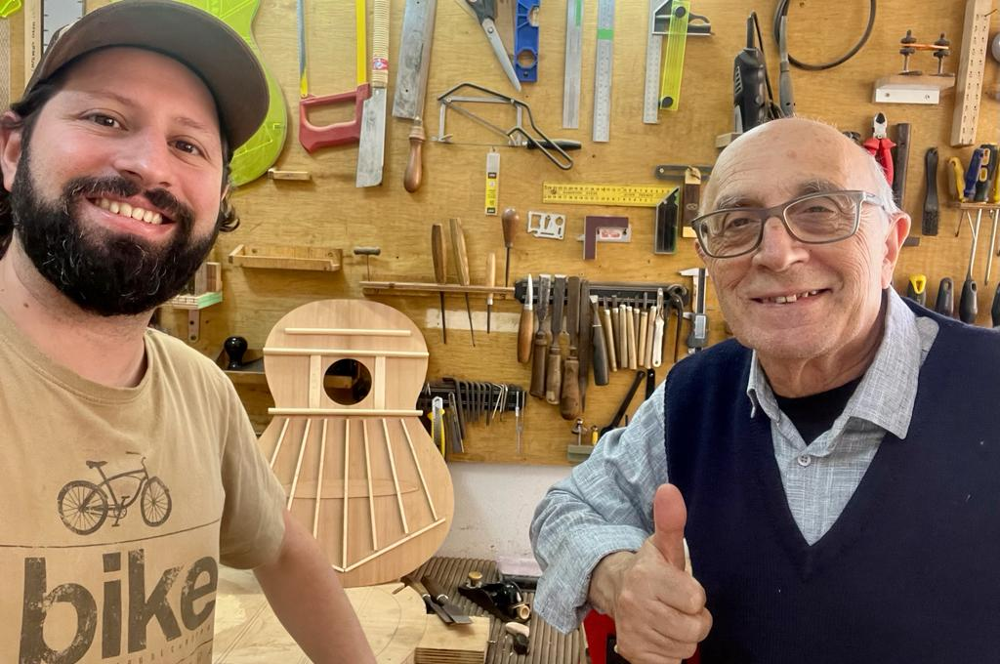
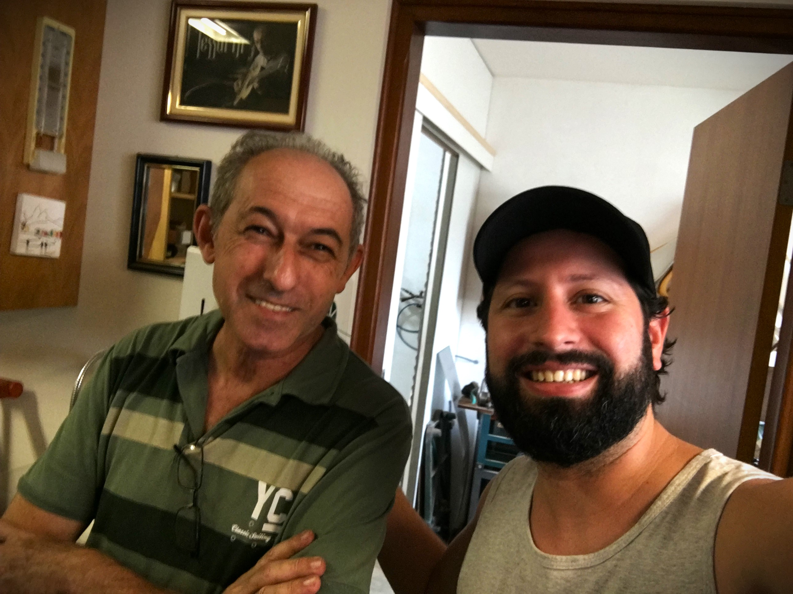

"Sempre tive uma ligação muito forte com a música desde pequeno. Embora nunca
tenha
estudado
formalmente,
sinto que a música e o violão são fontes profundas de ligação com a vida."
- Bruno Guaragna
Antes de me tornar luthier, trabalhei em diversas áreas. Minhas viagens, tanto no Brasil quanto no exterior, marcaram minha trajetória, sempre em busca de experiências e enriquecimento cultural. Minha relação e história com a luteria começou em 2017, quando estava na Itália para reconhecer minha cidadania italiana. Dois dias antes de me mudar para Edimburgo, no Reino Unido, enquanto caminhava pela cidade de Lodi, senti o cheiro de madeira e encontrei um atelier de luteria. Lá, conheci Fábio Schmidt, um talentoso luthier, e fiquei fascinado ao ver seu trabalho.
Ele me deixou tocar um violão artesanal, e essa experiência me marcou profundamente, fazendo-me perceber que talvez pudesse ter encontrado minha verdadeira paixão profissional. Após me mudar para a Escócia, passei três anos estudando luteria por conta própria, tentando contatar luthiers na Europa. Enfrentei dificuldades em conseguir mentores e não havia possibilidade com os altos custos dos cursos. Essa frustração só aumentava, mas minha vontade de aprender continuava crescendo, e segui estudando sempre que podia.
Com o Luthier Fábio Schmidt, em 2017 – Lodi, Itália.
Uma parte positiva desse processo foi a visita a vários ateliês de luteria pela Europa, mas um em especial me inspirou a me aprofundar ainda mais: o do luthier Antônio de Morales Nogues, conhecido por ter feito a última guitarra de Paco de Lucia, seu amigo próximo. Antônio foi generoso ao me mostrar e explicar o universo da luteria, compartilhando tanto as glórias quanto as dificuldades enfrentadas pelos luthiers.
Ouvir isso foi difícil, pois eu apenas via um mundo mágico de arte. Antônio se tornou um amigo, e até hoje trocamos mensagens, onde compartilho os violões que faço e recebo seus comentários, críticas e elogios sobre meu trabalho.
Com o Luthier Antonio Morales Nogues, em 2019 – Palma de Mallorca, Espanha.
Com o tempo, minha vontade de me aprofundar na luteria aumentou, e tomei uma das decisões mais importantes da minha vida: retornar ao Brasil. Embora já estivesse adaptado à vida na Europa, a infelicidade profissional me fez reconsiderar tudo, inclusive a ideia de voltar para a minha terra natal. Planejei meu retorno, trabalhei para juntar dinheiro e comprei ferramentas, acessórios e madeiras para dar os primeiros passos na luteria. Também organizei um curso prático no Sul do Brasil para aplicar o que havia estudado.
Um momento decisivo foi uma ligação para meu pai e meu avô. Ao contar sobre meus planos, meu avô começou a rir suavemente. Ao perguntar por que ele estava rindo, ele me disse algo que mudaria tudo: “Acho que tu estás no caminho certo, porque ‘papai e titios’ tinham uma fábrica de instrumentos em Porto Alegre. Eram luthiers.” Fiquei espantado por nunca ter sabido disso antes. Meu avô viu meu primeiro violão pronto, e nos emocionamos muito. Ele faleceu poucos meses depois, e naquele momento percebi que a arte de construir instrumentos estava em meu sangue. Compreendi a profunda sensação que tive ao entrar no ateliê do Fábio na Itália; conclui que estava no caminho certo.
Meus antepassados abriram, em meados de 1915, a primeira fase da fábrica de instrumentos: “Casa Guaragna.” A fábrica teve altos e baixos, como muitos negócios da época. Mudou de endereço várias vezes, fechou e reabriu. Teve uma fase filiada à “Guitarra de Prata,” uma das mais importantes fábricas do Rio de Janeiro. O prestígio foi notável, com premiações em exposições nacionais, como a Exposição Internacional do Centenário do Rio de Janeiro em 1922.
Concertistas e músicos usavam instrumentos “Guaragna” pelo país. Um deles, referência no violão, foi Levino Albano da Conceição, icônico violonista e concertista cego, que usava um violão “Casa Guaragna” em 1924, assinado por Roque Guaragna, o fundador da fábrica. A empresa fechou em 1947, com o falecimento de Roque Guaragna. Curiosamente, cerca de uma década após o encerramento, outras empresas, como “Giannini” e “Di Giorgio,” dirigidas por imigrantes italianos, ascenderam no mercado, consolidando-se como referências nacionais.
Esse crescimento foi impulsionado pelo “boom” da música popular brasileira, que desempenhou um papel fundamental na popularização do violão no país. A conclusão é que Roque Guaragna e a marca Guaragna de instrumentos poderiam ter surfado essa onda de sucesso, não fosse seu triste encerramento.
Fábrica Casa Guaragna com instrumentos premiados na exposição do Centenário do Rio de Janeiro em 1922
Até hoje não compreendo completamente por que as coisas aconteceram como aconteceram, mas aprendi que às vezes não precisamos entender ou explicar, apenas sentir e agir. Confiei na informação que recebi e fui decidido para o Brasil, pronto para fazer o curso e iniciar o ofício que tanto ansiava. Desde então, passei por muitos testes, aprendizados e lições. A jornada trouxe tanto alegrias quanto frustrações, como é a vida real, com dias de luta e dias de glória.
Continuei estudando intensamente a complexa arte da luteria, que exige disciplina, persistência, crença, investimentos e muita energia para se manter na profissão. Sou grato aos colegas e mestres que me ajudaram nesse processo; não quero correr o risco de esquecer ninguém. Entretanto, preciso mencionar dois mestres a quem devo muito, que foram pilares nessa trajetória e com quem construí amizade:
Antonio Tessarin, um mestre de coração generoso que me mostrou caminhos, me inspira e compartilha conhecimentos valiosos. Uma das maiores referências do país. Outro grande mestre que infelizmente já partiu, é Juan Santurión Hijo, um amigo inesquecível. Simples e com um vasto conhecimento não somente de Luteria, mas de música também, “Seu Santuríon”, como eu chamava-o, tocava vários instrumentos e os conhecia profundamente. Seu pai, Santuríon, foi um renomado Luthier. Aprendeu com o consagrado Luthier Espanhol Ignácio Fleta.
Fiz visitas importantes e conheci renomados luthiers do Brasil, além de receber a visita de luthiers consagrados também internacionalmente, como o canadense Will Hamm, que já trabalhou com o virtuoso Yamandu Costa. Todas essas experiências me proporcionaram valiosas dicas e lições.
Com o Luthier canadense Will Hamm, em meu atelier em Porto Alegre, Março|2022.
Com o Luthier e amigo Juan Santuríon hijo, em meu atelier em Porto Alegre.
Com o Luthier e amigo Antonio Tessarin, em seu atelier em Cerquilho/SP, Fev/2022
Meu objetivo é continuar melhorando e evoluindo a cada dia, sempre em busca de aperfeiçoamento e aprendizado constante, a fim de atender às exigências e demandas musicais de músicos e violonistas de todo o mundo. Felizmente, esse caminho se revela gradualmente, e sinto-me imensamente feliz e grato à vida pela dádiva de poder exercer uma profissão tão bela e repleta de mistérios, que constantemente me inspira e desafia.
Meus clientes frequentemente comentam que meus instrumentos possuem “alma” e uma personalidade única. Isso faz sentido, pois, como artesão, meu objetivo é infundir na construção não apenas a força de uma história e tradição que estão em meu sangue, mas também a riqueza de uma trajetória pessoal repleta de vivências e experiências que se destacam dos padrões convencionais.